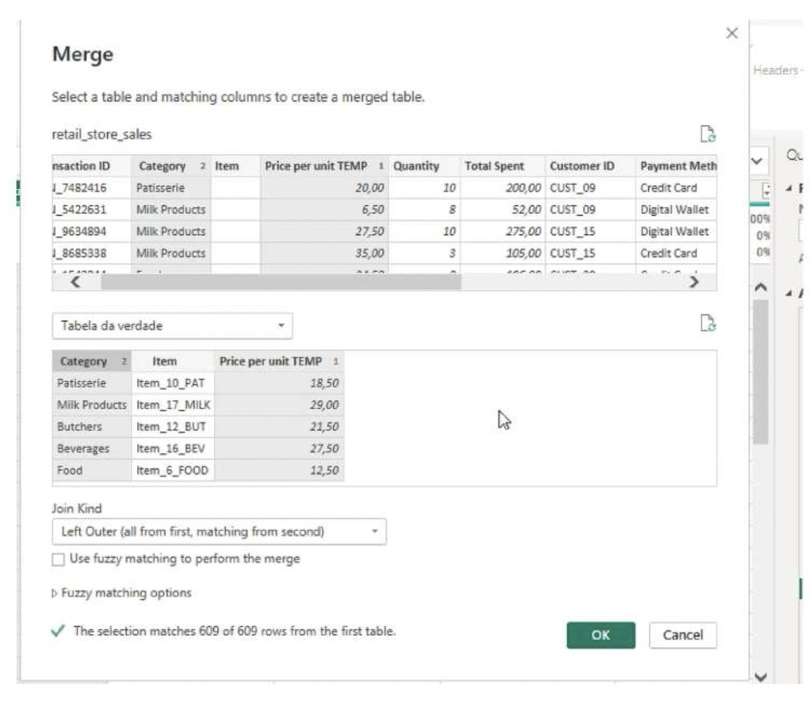
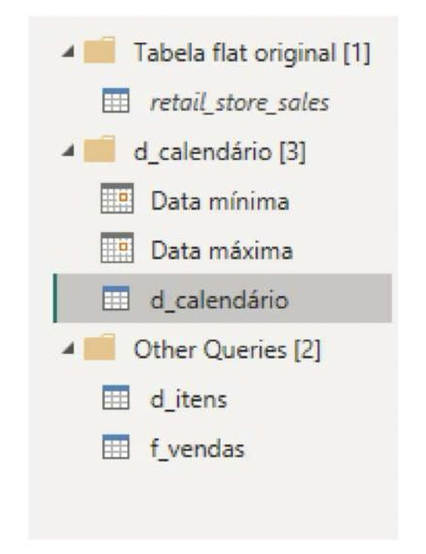

Varejo: uma regra explícita para cada sujeira
12.575 transações com preço nulo, linhas fantasmas e produtos sem nome. Cada caso virou uma regra explícita antes de modelar.
12.575transações
628linhas salvas
609nomes recuperados
604fantasmas fora

Os 4 problemas
- Preço nulo (5%): imputado por total ÷ quantidade, o valor exato da própria linha. 628 linhas preservadas.
- Linhas fantasmas: 604 registros só com preço, sem quantidade nem total. Excluídos para não distorcer o ticket médio.
- Produto sem nome: categoria + preço identificavam o item de forma única; virou chave composta para recuperar mais de 600 nomes.
- Data solta: calendário dimensional completo, necessário para comparação entre períodos.
Estatística
Para o ticket médio não ser puxado pelos extremos, tirei do cálculo as transações fora de μ±2σ (cerca de 5%, as duas caudas). É uma escolha de robustez, não uma afirmação de que eram erros: o volume total continua com todas. Testei ±3σ antes e ele não mudava nada.
Imagens

Meu papel
Fiz
Todo o ETL, a modelagem e a análise.
O que falta
Feito em Power Query. Hoje eu levaria as mesmas regras para SQL ou dbt, versionadas e testadas.